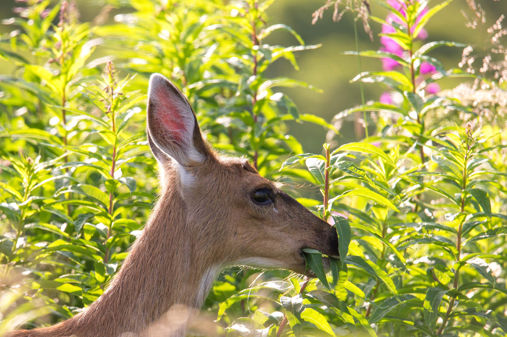
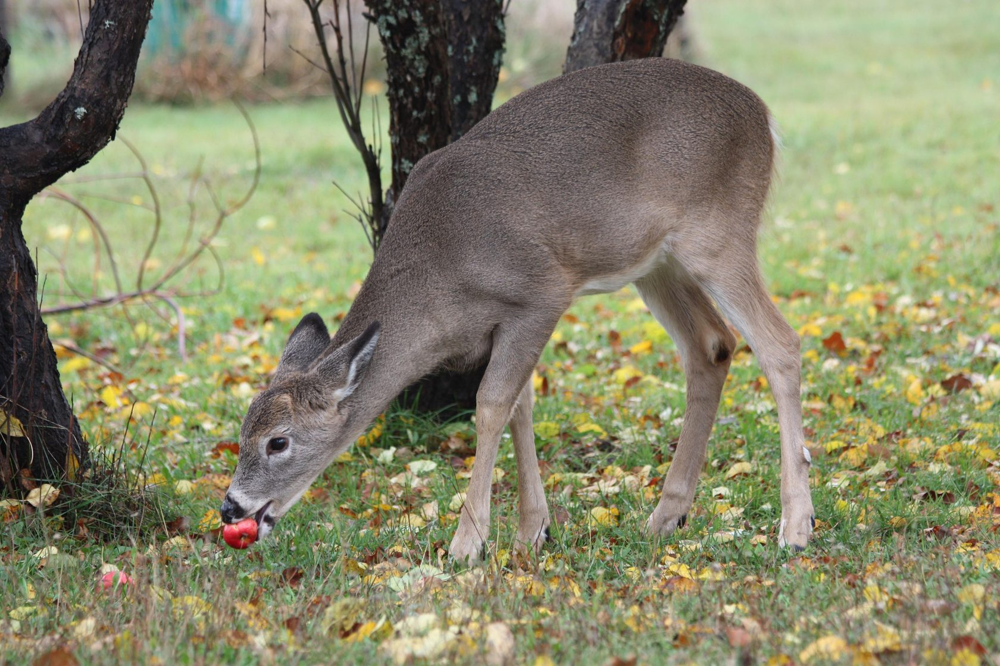
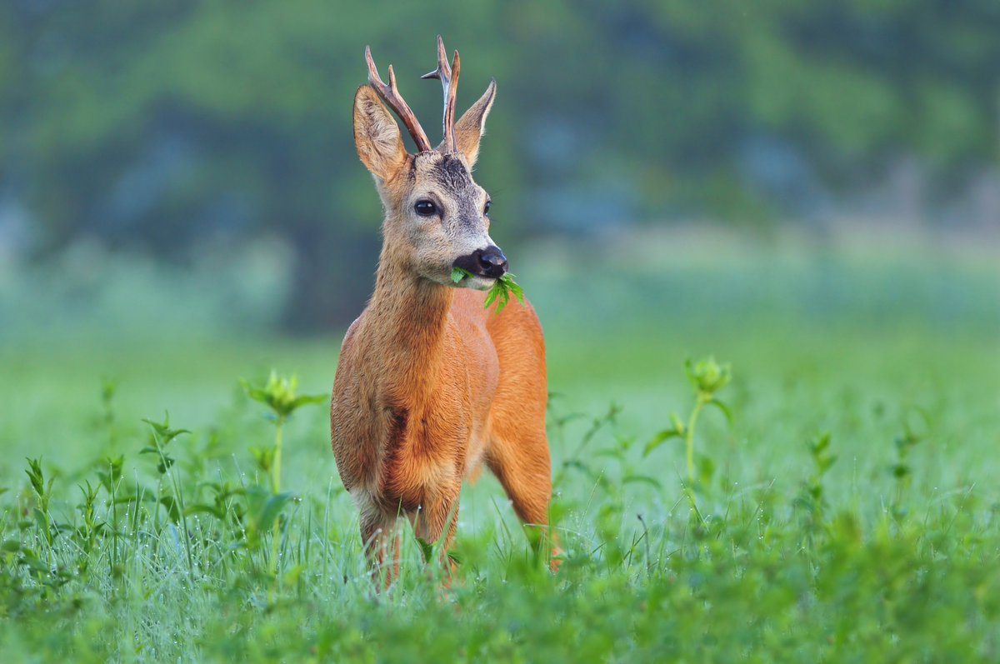

В общем, можно сказать, что внутри своей области распространения косуля водится как в болыших лесах, так и в молодых рощах и порослях, если они только изобилуют кустарником, причем безразлично, расоложены эти лесные пространства в гористых местностях или равнинных, состоят они из хвойного или из лиственного леса. Зимой она с высот спускается в долины, летом же поднимается еще выше. В Сибири косуля ведет кочевую жизнь в периоды, когда ей становится трудно или невозможно зимовать на летних стоянках. С наступлением холодного времени года она покидает места летнего пребывания, собирается в многочисленные стада и тогда уже окончательно избегает гор, чтобы провести зиму в лесах равнины. Движения косули проворны и грациозны. Она может производить удивительно большие дугообразные прыжки и без заметных усилий прыгает через широкие рвы, высокие заборы и кусты, плавает и лазает так же хорошо. Косуля прекрасно слышит, чует и видит; хитра, осторожна, но при том и очень доверчива.
Косули никогда не образуют таких больших стад, как олени. Большую часть года они живут семьей, самец с одной, редко с 2— 3 самками и их детенышами. Стада в 12-15 особей можно видеть только там, где недостает самцов. Зимой иногда сходятся несколько семейств и довольно долгое время живут вместе. Телята до следующего периода течки остаются со взрослыми косулями, затем выгоняются и часто образуют самостоятельные стада. Днем косуля остается в одном из своих временных надежных убежищ; под вечер она отправляется пастись в молодые кустарники, лесные поляны и луга или на поля; под утро снова возвращается в чащу леса или в высокие хлеба, передними ногами разрывает мох или дерн и таким образом устраивает себе постель или лого- вище для отдыха.
Едят косули почти то же самое, что и благородные олени, но избирают более нежные растения. Корм состоит главным образом из листьев, молодых побегов разнообразных лиственных деревьев, из почек хвойных деревьев, незрельх посевных злаков и разных трав. В Сибири, кроме этих и им подобных видов растений, едят побеги полыни, лапчатки и др. Косули очень охотно лижут соль, а чистая вода для них необходима, но в дождь или сильную росу довольствуются каплями на листьях.
  После того как сброшенные взрослым самцом в октябре или ноябре рога образовались и разветвились снова,
а самец также содрал с них кожу, что обыкновенно происходит в конце марта, самое позднее в апреле, он уже
становится не таким безобидным. Но все-таки он еще не находится в возбужденном состоянии, ведет себя
даже иногда как заботливый отец, принимает участие в уходе за своими и чужими детенышами. В середине
июля эти прекрасные отношения прекращаются. Им овладевает беспокойство, страсть к борьбе и драке;
сильный самец рыщет в окрестностях, угрожающим образом выходит навстречу другим самцам, довольно часто
подает голос, издавая глухой отрывистый звук «бэе-бэе» или «бе-бе-бе», и начинает бегать за самками. Его
возбуждение возрастает с каждым днем; он часто с безумным ожесточением дерется со своим соперником,
нападает и на других животных, в редких случаях на людей, истязает, даже убивает телят, когда их
присутствие кажется помехой, бешено и беспощадно обращается с самками, которые не тотчас подчиняются его
воле. Косуля бывает беременна приблизительно 40 недель и, сколько известно, отличается от других своих
родичей лишь тем, что зародыш необыкновенно долгое время пребывает в одном и том же состоянии. Дня
четыре или пять перед родами она отыскивает себе спокойное место, по возможности в самой уединенной
части леса, и там рождает телят. Самки, которые помоложе, обыкновенно рождают только одного теленка, те,
которые постарше, имеют двух, в редких случаях трех. Мать с заботливостью прячет своих детенышей от
каждого приближающегося врага. В самой ранней молодости телята припадают к земле, как только слышат этот
звук; впоследствии они спасаются вместе с матерью. В первые дни жизни телят, когда они еще совсем
беспомощны, самка старается отвлечь от них внимание врага.
Приблизительно на восьмой день после рождения мать берет детенышей с собой на пастбище, а спустя 10-12
дней они уже достаточно сильны, чтобы бежать за ней. Тогда она возвращается с ними на прежнее место, как
бы с намерением представить отцу его потомство. Телята сосут матку до августа, но уже на втором месяце
от роду едят мелкую зеленую траву. Мать приучает их выбирать подходящую пищу. Четырнадцати месяцев от
роду они достигают половой зрелости.